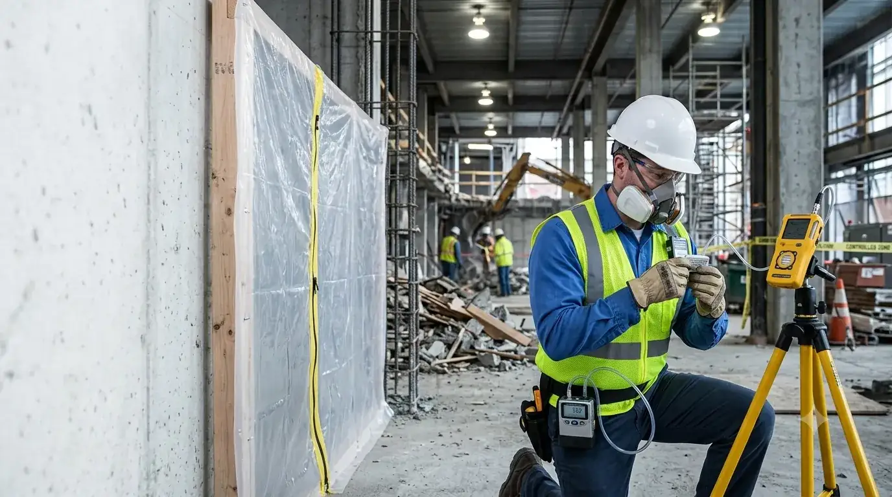
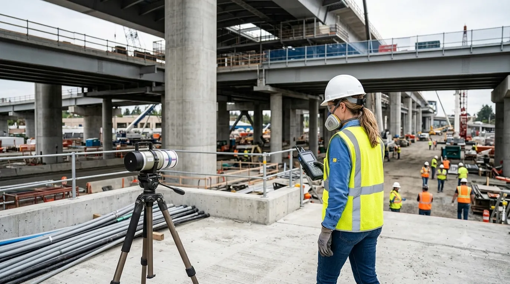

Professional Air Monitoring Services
California Building Environment provides independent air monitoring services for residential, commercial, industrial, healthcare, educational, and government projects throughout Southern California.
Air samples collected during monitoring activities are submitted to AIHA-LAP, LLC accredited laboratories for phase contrast microscopy (PCM) per NIOSH 7400, transmission electron microscopy (TEM) per AHERA/ISO 10312, or other methods as project specifications require. Laboratory testing is performed by the laboratory, while we provide professional monitoring, documentation, and reporting.
Independent Environmental Air Monitoring
Air monitoring may be performed during environmental remediation projects, construction activities, demolition work, asbestos abatement projects, or other operations where airborne contaminants require independent monitoring.
Representative air samples are collected using industry-accepted methods: high-volume and low-volume pumps calibrated before and after each run, PCM cassettes (25mm, 0.8µm MCE) for fiber counting per NIOSH 7400, TEM cassettes for AHERA clearance and detailed fiber characterization. Samples are submitted to AIHA-LAP, LLC accredited laboratories. Laboratory findings are incorporated into a comprehensive monitoring report with daily fiber concentrations, statistical analysis, excursion evaluations, and compliance determinations per OSHA, Cal/OSHA, AHERA, and project specifications.
Because California Building Environment does not perform remediation or abatement services, our monitoring remains objective and independent.

Common Projects That Require Air Monitoring
Independent air monitoring is required during asbestos abatement (per OSHA, Cal/OSHA, AHERA, and NESHAP), demolition of regulated structures, renovation of buildings with known asbestos, and environmental remediation projects. Monitoring types include: background, containment (during), clearance (post), personnel, and perimeter/environmental.
Asbestos Abatement — Containment & Clearance
Daily PCM (NIOSH 7400) monitoring inside and outside containment during abatement, with TEM clearance (AHERA 40 CFR 763) for schools and public buildings. Statistical evaluation of fiber concentrations against 0.01 f/cc (PCM) or 70 s/mm² (TEM) criteria.
Demolition of Regulated Structures
Perimeter and area monitoring during demolition of buildings with known or presumed asbestos-containing materials to document fiber release and support NESHAP/Cal/OSHA compliance.
Construction & Renovation with ACM
Monitoring during maintenance, renovation, or tenant improvements where asbestos-containing materials remain in place or are disturbed per OSHA Class I–IV work classifications and Cal/OSHA 1529.
Environmental Remediation
Air monitoring during soil remediation, mold remediation, lead abatement, and other projects generating airborne particulates or contaminants, with method selection matched to target analytes.
Healthcare, Schools & Public Facilities
Hospitals, K-12 schools, universities, and government buildings require third-party environmental monitoring during renovation projects to protect sensitive populations and satisfy AHERA, Joint Commission, and regulatory oversight.
Government & Infrastructure Projects
Municipal, county, state, and federal agencies require independent air monitoring for public works, transportation, water/wastewater, and military projects with environmental specifications and community air monitoring plans.
Professional Air Monitoring Process
Project Review
Review project scope, monitoring requirements, sampling locations, and reporting objectives.
Field Monitoring
Air monitoring equipment is deployed and representative air samples are collected according to project requirements.
Laboratory Analysis
Collected samples are submitted to accredited laboratories for analysis using applicable analytical methods.
Monitoring Report
Inspection observations, sampling information, and laboratory findings are documented in a comprehensive report.

Projects We Commonly Monitor
Air monitoring services are available for a wide variety of environmental and construction-related projects throughout Southern California.
- Asbestos abatement projects
- Construction projects
- Demolition projects
- Industrial facilities
- Commercial buildings
- Schools and universities
- Hospitals and healthcare facilities
- Government facilities
- Renovation projects
- Environmental remediation
- Tenant improvement projects
- Property management projects
- Public infrastructure projects
- Independent third-party monitoring
Air Monitoring FAQs
Do you perform laboratory analysis?
No. We collect air samples during monitoring activities and submit them to accredited laboratories for analysis. Laboratory testing is performed by the accredited laboratory, while California Building Environment provides independent monitoring, documentation, and reporting.
Do you perform asbestos abatement?
No. We provide independent environmental monitoring and consulting only. We do not perform asbestos abatement, remediation, or restoration services, ensuring our monitoring remains objective.
How long does air monitoring last?
The duration depends on the scope of the project. Monitoring may be required for a few hours, a full workday, multiple days, or throughout the duration of a project.
Who hires an independent air monitoring consultant?
Our clients include property owners, contractors, project managers, industrial facilities, schools, healthcare organizations, government agencies, architects, engineers, and environmental consultants.
When will monitoring results be available?
After laboratory analysis is complete, we prepare a comprehensive report documenting monitoring activities, sampling information, laboratory findings, and project observations.
Regulatory Framework
Air monitoring during asbestos abatement and construction projects is required by federal and state regulations:
- EPA NESHAP — National Emission Standards for Hazardous Air Pollutants (40 CFR Part 61, Subpart M) requires air monitoring during asbestos abatement projects.
- SCAQMD Rule 1403 — South Coast Air Quality Management District requires personal and area air monitoring during asbestos removal in the South Coast basin.
- Cal/OSHA Lead Standards — Air monitoring requirements for lead exposure during renovation and demolition activities (Title 8, Section 1532.1).
All air monitoring is performed following NIOSH Method 7400 (PCM) and EPA AHERA (TEM) analytical protocols.
Do I Need Air Monitoring?
Check if any of these apply to your project:
If you checked one or more, independent air monitoring may be required.
Request Air MonitoringRequest a Quote
Need Independent Air Monitoring?
California Building Environment provides independent environmental air monitoring, professional sample collection, and consulting throughout Southern California.